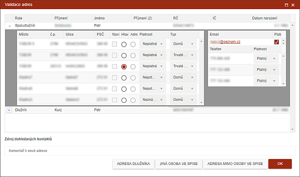

Dohledané informace
Akční tlačítko DOHLEDANÉ INFORMACE slouží pro rychlé zadání sebraných informací, jako jsou adresy, telefony a emaily, včetně možnosti zneplatnění původních. Do Historie spisu se ukládá informace o změně formou textového zápisu - "Dohledané kontakty" + co bylo dohledáno, zneplatněno či opraveno.

Tato funkce slouží pro práci s jednotlivými spisy. Pokud není vybrán spis či je jich vybráno více, je funkce nepřístupná.